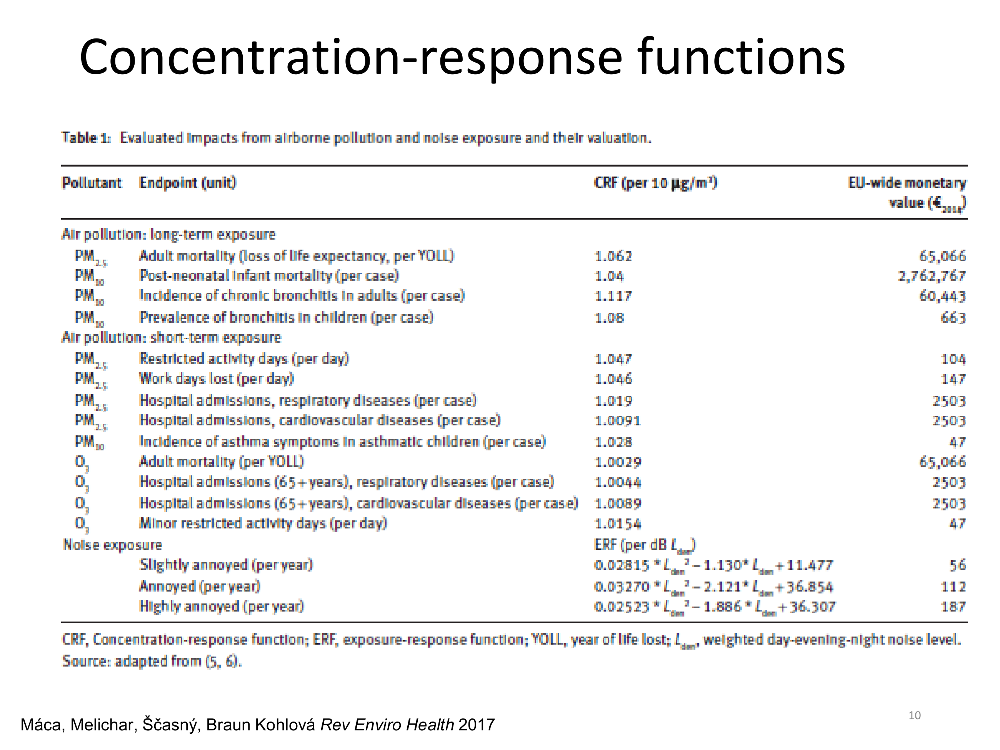
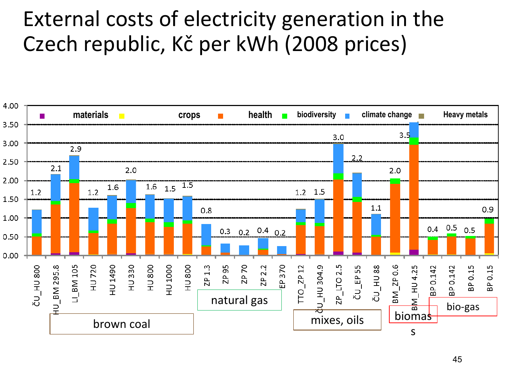
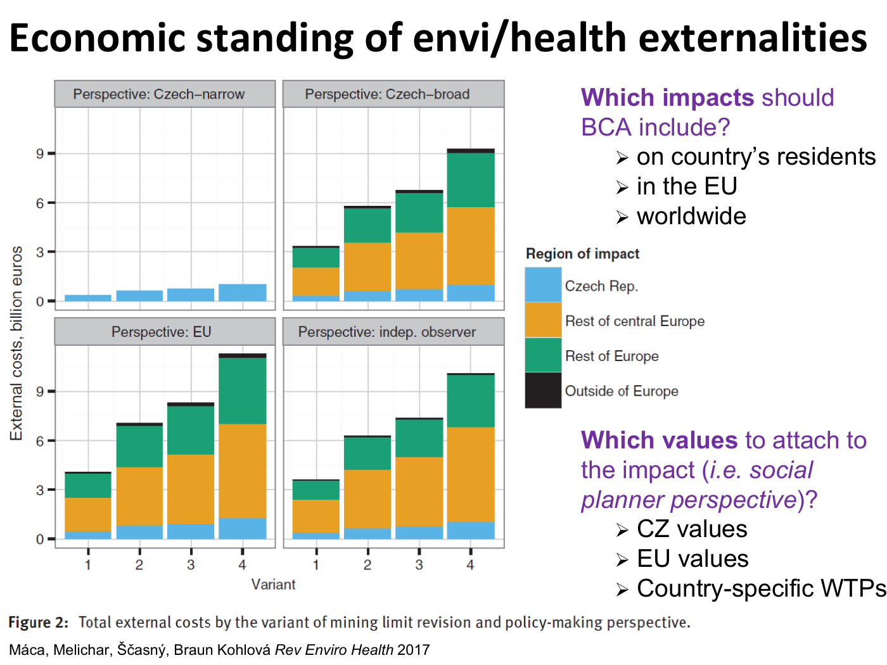

Trace impact pathways and convert matched relative risks into cases
Explanation, worked examples and practice
Useful first: Identify economic externalities and apply conditional welfare criteria, Audit transport cost estimates by welfare component, valuation and aggregation
Outcome and conditions
Trace a specified source through concentration/receptors to health impacts, derive a matched reference-baseline risk-to-cases illustration and identify missing calibration before monetization. All essential components listed in metadata are required. Hypothetical assessment values instantiate the checked equations; they are not historical observations or observed outcomes. Independent checks are closed-note and without hints, solution access, external retrieval or other assistance; a basic arithmetic calculator is allowed. Teach establishes and records actual help/exposure conditions before claiming independence.
Prerequisites and checks
Check the prerequisites
- O005 outcome and repair route: a real neglected receptor effect connects a physical pressure to the economic externality.
- O009 outcome and repair route: the cost/endpoint boundary distinguishes protection resources from residual physical harm and valuation.
O014-P1, item_version 1, prerequisite_diagnostic. Prompt: Why does an uncounted emissions pressure need a receptor utility/production effect to be an economic externality? Is observed defensive spending automatically total external cost?
Complete key and rubric: An economic externality requires the neglected real effect on a receptor, not pressure alone. Defensive spending can omit residual harm; the correctly bounded total may need both. Require both distinctions; repair O005 definition and O009 cost-boundary/valuation audit. Pass requires every requested reason and result; partial for an omitted reason or unresolved isolated arithmetic slip; fail for the conflicting mechanism. This diagnostic never counts as acquisition. Current or explicitly compatible committed independent prerequisite evidence may permit skipping its check; familiarity alone cannot. Use the cited complete prerequisite lesson or the named included foundation, then the worked example, after a partial/failing entry check.
Motivation, intuition, and definitions
Trace a specified source through concentration/receptors to health impacts, derive a matched reference-baseline risk-to-cases illustration and identify missing calibration before monetization. Establish the definitions, assumptions and relevant comparisons before simplifying an equation. The complete reused passages establish every academic claim, notation choice and qualification assessed here; necessary prerequisites use the complete lessons above.
Explanation steps
Origin: reused complete note introduction before its first subsection, Impact pathways, health valuation and standing, fingerprint df3400bedc26d3001c8239c118b327ba73e7fd2889154e49a8fb01fc0337016f. Heading depth alone is adapted.
Impact pathways, health valuation and standing
Why can the same tonne of pollution cause different damages in different places? Emissions are only the beginning of the causal chain. An impact-pathway assessment follows a specified activity through dispersion, exposure and physical effects, then values those effects for an explicitly chosen population. This connects Week 2 externality and benefit-cost concepts to a practical damage estimate. 02_AQImp-ClimateChange.pdf, physical PDF p. 1–5, 19

This map follows physical pp. 2–13 and 19. Its central distinction is between a pressure, an exposure, an impact and a money value; each arrow needs different evidence. 02_AQImp-ClimateChange.pdf, physical PDF p. 2–13, 19
Source passage
Origin: reused complete checked passage Top-down allocation versus bottom-up pathways; fingerprint df3400bedc26d3001c8239c118b327ba73e7fd2889154e49a8fb01fc0337016f. Heading depth alone is adapted.
Top-down allocation versus bottom-up pathways
The top-down diagram starts from a national damage estimate and a pollutant/activity allocation, then assigns a fraction of damage to the activity. It can be useful at an aggregate level but does not itself trace where a particular source's emissions travel. The bottom-up side begins with resource use (electricity production), follows SO2 emissions and atmospheric concentrations, ecosystem acidification/disruption, damage to forest production/non-production functions, and market/non-market valuation. Moving from a national average to a specific plant requires those physical and receptor distinctions. 02_AQImp-ClimateChange.pdf, physical PDF p. 2
The lecture describes ExternE (Externalities of Energy) as an EU research series launched in 1991, initially concerned with airborne pollution from power plants and later transport, industry and other activities. It connects the method to DPSIR: driving forces, pressures, state, impacts and responses. Its note that “I” is monetized impacts describes the valuation endpoint of this application; one must still calculate physical impacts before money values can be attached. Damage depends on technology, operation, location, time, the included fuel-cycle boundary and population preferences. 02_AQImp-ClimateChange.pdf, physical PDF p. 3–4
Source passage
Origin: reused complete checked passage From concentration to a receptor-specific impact; fingerprint df3400bedc26d3001c8239c118b327ba73e7fd2889154e49a8fb01fc0337016f. Heading depth alone is adapted.
From concentration to a receptor-specific impact
The Lauffen/Stuttgart example maps changes in sulfate concentration due to a plant's SO2 emissions across Europe. The pressure-map legend is in ng/m³. A separate receptor map shows where potentially exposed people live. The mortality/life-year-loss map combines exposure changes and population response: a high concentration change in a sparsely populated area need not create the largest health loss. Transboundary transport explains why damages need not stay within the emitting jurisdiction. The maps' different units and colour breaks must not be equated. 02_AQImp-ClimateChange.pdf, physical PDF p. 5–8

The source diagram moves from emissions through transport/chemistry to human/material/crop effects and only then money. Treating an emission quantity itself as a welfare loss would skip the receptor and valuation steps. 02_AQImp-ClimateChange.pdf, physical PDF p. 5
An exposure/dose/concentration-response function connects a specified exposure change with a specified outcome. Physical p. 9 gives the illustrative equation
The coefficient embodies a response per concentration unit and exposed person, so concentration units, population definition and exposure period must match its calibration. The slide does not supply those calibration units/time details; the ng/m³ map is not permission to assume the equation uses ng/m³. This formula supports the pathway logic, but not a reproducible numerical health estimate without that missing context. Its graph contrasts linear, nonlinear, threshold/limited and initially beneficial (“fertilizing”) shapes; choosing a straight line is a substantive response assumption, not an automatic property of every pollutant. 02_AQImp-ClimateChange.pdf, physical PDF p. 9
Source passage
Origin: reused complete checked passage Endpoints and the source response-value table; fingerprint df3400bedc26d3001c8239c118b327ba73e7fd2889154e49a8fb01fc0337016f. Heading depth alone is adapted.
Endpoints and the source response-value table
The source includes particulate matter, SO2/NOx/NH3/VOC, CO2, heavy metals, noise and odour as burdens, with health, buildings/materials, crops, climate, landscape, visibility and cultural heritage as impact categories. Its p. 11 embedded comment adds respiratory admissions, restricted activity, congestive heart failure, nonfatal cancer, bronchitis and asthma; material ageing/soiling across metals, paint and stone; and crop-yield changes for barley, oats, potato, rye, sugar beet, wheat, sunflower, rice and tobacco. The category list does not assert that every burden affects every endpoint equally. 02_AQImp-ClimateChange.pdf, physical PDF p. 11, 11

Physical p. 10's complete table retains its endpoint units and numerical entries. Long-term PM2.5 adult mortality is expressed per year of life lost (YOLL), while infant mortality and bronchitis rows are per case. Short-term PM2.5/PM10/O3 rows distinguish restricted/work days, respiratory/cardiovascular admissions, asthma symptoms and mortality. A value per day cannot be multiplied by a number of people without specifying days per person; a value per YOLL is not a value per death. The CRF column is calibrated per 10 µg/m³, whereas the noise rows use weighted day-evening-night level \(L_{den}\) in dB and separate quadratic annoyance functions. The table alone does not supply baseline disease frequencies, age structure or valid concentration/noise ranges; do not extrapolate its curves outside their study context. 02_AQImp-ClimateChange.pdf, physical PDF p. 10
A CRF such as 1.019 per 10 µg/m³ is a relative risk: for that concentration increment, the respiratory-admission rate is multiplied by 1.019, a 1.9% relative increase. It is not 1.019 extra admissions per person, and it is not a YOLL conversion. As an explicitly simplified calculation for a 10 µg/m³ increase from a reference exposure, if the baseline admission rate is \(r_0\) cases per person per year and the exposed population is \(N\), then
For an illustrative baseline of 0.01 admissions per person per year and 100,000 exposed people, the reference count is 1,000 admissions per year and the increase is 19 per year. These invented round inputs teach the calculation; they are not an estimate for the lecture's plant. Other increments require the study's specified response function, and reductions from an already exposed observed baseline require the corresponding attributable-fraction calculation rather than silently reusing the same baseline. The baseline incidence, exposed population, period and endpoint must match. Mortality-to-YOLL estimation additionally needs life-expectancy/age information; a relative-risk coefficient alone cannot produce life years. This expands the source's pathway reasoning, supported by the manuscript's Methods/Table 1. 02_AQImp-ClimateChange.pdf, physical PDF p. 10
Bounded reference verification: Máca, Melichar, Ščasný and Braun Kohlová (2017), “Valuing environmental health for informed policy-making,” Reviews on Environmental Health 32(1–2), 171–175, author manuscript physical pp. 3–5 (Methods/Table 1/perspectives), confirms that background population and incidence enter the assessment, and identifies the values as euro 2014. It also distinguishes physical modeling uncertainty from economic standing/value choices. Consulted author manuscript. This verifies interpretation of the supplied table, rather than importing its whole case study as assigned scope.
Worked example
O014-W1, item_version 1, worked_example. Prompt: A hypothetical bottom-up assessment studies a 10 \(\mu\mathrm{g/m^3}\) increase from a reference exposure. For this explicitly matched endpoint/population/year the supplied relative risk is \(RR=1.019\), baseline respiratory admissions are \(r_0=0.01\) cases/person/year and exposed population \(N=100000\). Trace activity through emissions/chemistry, concentrations, receptor population, physical impacts and valuation, and contrast a national top-down allocation. Interpret RR and derive the baseline count and additional annual admissions. Explain why the emissions map alone cannot rank damages, why these are admissions rather than YOLL, and why the lecture sulfate coefficient \(3.9\times10^{-5}\) cannot produce a calibrated plant estimate from its map without missing units/time. State the boundary for other increments or reductions from an already exposed baseline.
Complete solution and essential rubric: Bottom-up analysis specifies technology/operation/location/time, follows emissions through transport and chemistry to concentration changes at receptors, combines exposure with population/baseline response, then attaches matching values. Top-down allocation divides an aggregate damage estimate by activity/pollutant shares without tracing this plant’s spatial pathway. \(RR=1.019\) multiplies the admission rate for the supplied reference-to-exposed increment, a relative increase of \(1.900000\%\), not 1.019 extra cases/person. Reference admissions are \(Nr_0=100000(0.01)=1000.000000\) cases/year; additional admissions are \(\Delta I=Nr_0(RR-1)=19.000000\) cases/year. These are illustrative expected counts, not identified actual persons or a plant result. Population distribution can reverse the ranking of concentration changes and health impacts. Per-case counts cannot be treated as years of life lost; mortality-to-YOLL requires age/life-expectancy information, and values per day/case/YOLL must match endpoints. The source sulfate coefficient lacks calibration concentration/time details, so the map’s ng/m³ label is not permission to insert it. Other increments need the study’s response function; a reduction from an observed exposed baseline needs the corresponding attributable-fraction calculation, not an unqualified reuse of the reference-baseline formula. Linear, nonlinear and threshold shapes are substantive response assumptions. All requested calculations, derivations and qualifications are essential; the component map above applies to every full form.
Practice with fading assistance
Write your reasoning, then reveal the complete key to check each step.
A local draft for your own study.
Reveal explanation
Complete solution and essential rubric: Bottom-up analysis specifies technology/operation/location/time, follows emissions through transport and chemistry to concentration changes at receptors, combines exposure with population/baseline response, then attaches matching values. Top-down allocation divides an aggregate damage estimate by activity/pollutant shares without tracing this plant’s spatial pathway. \(RR=1.019\) multiplies the admission rate for the supplied reference-to-exposed increment, a relative increase of \(1.900000\%\), not 1.019 extra cases/person. Reference admissions are \(Nr_0=40000(0.015)=600.000000\) cases/year; additional admissions are \(\Delta I=Nr_0(RR-1)=11.400000\) cases/year. These are illustrative expected counts, not identified actual persons or a plant result. Population distribution can reverse the ranking of concentration changes and health impacts. Per-case counts cannot be treated as years of life lost; mortality-to-YOLL requires age/life-expectancy information, and values per day/case/YOLL must match endpoints. The source sulfate coefficient lacks calibration concentration/time details, so the map’s ng/m³ label is not permission to insert it. Other increments need the study’s response function; a reduction from an observed exposed baseline needs the corresponding attributable-fraction calculation, not an unqualified reuse of the reference-baseline formula. Linear, nonlinear and threshold shapes are substantive response assumptions. All requested calculations, derivations and qualifications are essential; the component map above applies to every full form.
Allowed support is the first stated identity only; hide the remaining key while the learner completes it. Supported performance is practice, not an independent result.
Rubric and independence
Self-assessment criteria and tutor checks
Required components: pathway_and_top_down_contrast, relative_risk_baseline_population_and_endpoint_units, calibration_boundary_and_uncertainty. Each full prompt/key below elicits every component; all are necessary for a pass on every permitted pair. Accept algebraically equivalent expressions and clearly defined opposite cash-flow signs with correct interpretation. A pass requires all requested outputs/reasons, correct units/assumptions and no critical conceptual error. Partial means a missing component or an unresolved isolated arithmetic slip with an otherwise valid method; independent correction is required for a pass. Fail means a critical mechanism/condition is wrong. Unscorable means a response or its help/exposure conditions cannot be established. Unknown help conditions are never independent evidence.
Critical errors: RR interpreted as extra cases/person; concentration/map legend substituted for missing calibration; cases/deaths/YOLL interchanged; emissions directly declared a monetary damage.
Acquisition requires two distinct unused unassisted full checks selected from the six exact metadata routes. Every I/D form covers all components; W1, S1, the prerequisite and C1 are forbidden substitutes. A D form used for acquisition cannot later be counted again as delayed success. No teach-generated item may replace a named full check; additional verified explanation/practice is allowed under the unchanged method and may not fabricate evidence. If fewer than two fresh forms remain for acquisition, return a plan_issue for an additional prepared bank.
| Component | I1 | I2 | D1 | D2 |
|---|---|---|---|---|
| pathway_and_top_down_contrast | required | required | required | required |
| relative_risk_baseline_population_and_endpoint_units | required | required | required | required |
| calibration_boundary_and_uncertainty | required | required | required | required |
Misconceptions and correction
An observed omitted term/sign is tentative until the learner explains it; compare the reasoning with the critical errors above. Score the original response before providing help. Route a conceptual failure to the relevant included derivation and prerequisite, then use an unused full form.
O014-C1, item_version 1, narrow_correction. Prompt: A coefficient is RR 1.019 for a specified 10 µg/m³ increment. Can multiplying it directly by population give additional admissions? Key/rubric: No. For the stated reference-to-exposed increment, derive baseline cases from matching incidence times population, then multiply by RR−1. Endpoint/period/reference must match and other increments need the stated response law. Pass requires all keyed reasoning; partial for a missing part; fail for the conflicting mechanism. This repairs a common inference only; it cannot substitute for a full numerical/capability check.
Give at most two hints (first identify the date/unit, second point to the included identity); after ineffective hints show the relevant worked step. After two unsuccessful independent attempts stop repeated quizzing, revisit the explanation/prerequisite and preserve the unresolved status.
Immediate and delayed checks
Write your reasoning, then reveal the complete key to check each step.
A local draft for your own study.
Reveal explanation
Complete solution and essential rubric: Bottom-up analysis specifies technology/operation/location/time, follows emissions through transport and chemistry to concentration changes at receptors, combines exposure with population/baseline response, then attaches matching values. Top-down allocation divides an aggregate damage estimate by activity/pollutant shares without tracing this plant’s spatial pathway. \(RR=1.019\) multiplies the admission rate for the supplied reference-to-exposed increment, a relative increase of \(1.900000\%\), not 1.019 extra cases/person. Reference admissions are \(Nr_0=120000(0.012)=1440.000000\) cases/year; additional admissions are \(\Delta I=Nr_0(RR-1)=27.360000\) cases/year. These are illustrative expected counts, not identified actual persons or a plant result. Population distribution can reverse the ranking of concentration changes and health impacts. Per-case counts cannot be treated as years of life lost; mortality-to-YOLL requires age/life-expectancy information, and values per day/case/YOLL must match endpoints. The source sulfate coefficient lacks calibration concentration/time details, so the map’s ng/m³ label is not permission to insert it. Other increments need the study’s response function; a reduction from an observed exposed baseline needs the corresponding attributable-fraction calculation, not an unqualified reuse of the reference-baseline formula. Linear, nonlinear and threshold shapes are substantive response assumptions. All requested calculations, derivations and qualifications are essential; the component map above applies to every full form.
I1/I2 are immediate checks; D1/D2 are distinct parallel variants reserved where possible for delayed checks. A delayed success requires an unused form before recap, no help/solution access, and at least 24 actual elapsed hours after acquisition and the most recent relevant teaching/solution exposure. Record intervening exposure. A calendar-date change alone is insufficient; an early D attempt is immediate evidence only.
A local draft for your own study.
Reveal explanation
Complete solution and essential rubric: Bottom-up analysis specifies technology/operation/location/time, follows emissions through transport and chemistry to concentration changes at receptors, combines exposure with population/baseline response, then attaches matching values. Top-down allocation divides an aggregate damage estimate by activity/pollutant shares without tracing this plant’s spatial pathway. \(RR=1.019\) multiplies the admission rate for the supplied reference-to-exposed increment, a relative increase of \(1.900000\%\), not 1.019 extra cases/person. Reference admissions are \(Nr_0=80000(0.02)=1600.000000\) cases/year; additional admissions are \(\Delta I=Nr_0(RR-1)=30.400000\) cases/year. These are illustrative expected counts, not identified actual persons or a plant result. Population distribution can reverse the ranking of concentration changes and health impacts. Per-case counts cannot be treated as years of life lost; mortality-to-YOLL requires age/life-expectancy information, and values per day/case/YOLL must match endpoints. The source sulfate coefficient lacks calibration concentration/time details, so the map’s ng/m³ label is not permission to insert it. Other increments need the study’s response function; a reduction from an observed exposed baseline needs the corresponding attributable-fraction calculation, not an unqualified reuse of the reference-baseline formula. Linear, nonlinear and threshold shapes are substantive response assumptions. All requested calculations, derivations and qualifications are essential; the component map above applies to every full form.
A local draft for your own study.
Reveal explanation
Complete solution and essential rubric: Bottom-up analysis specifies technology/operation/location/time, follows emissions through transport and chemistry to concentration changes at receptors, combines exposure with population/baseline response, then attaches matching values. Top-down allocation divides an aggregate damage estimate by activity/pollutant shares without tracing this plant’s spatial pathway. \(RR=1.019\) multiplies the admission rate for the supplied reference-to-exposed increment, a relative increase of \(1.900000\%\), not 1.019 extra cases/person. Reference admissions are \(Nr_0=150000(0.008)=1200.000000\) cases/year; additional admissions are \(\Delta I=Nr_0(RR-1)=22.800000\) cases/year. These are illustrative expected counts, not identified actual persons or a plant result. Population distribution can reverse the ranking of concentration changes and health impacts. Per-case counts cannot be treated as years of life lost; mortality-to-YOLL requires age/life-expectancy information, and values per day/case/YOLL must match endpoints. The source sulfate coefficient lacks calibration concentration/time details, so the map’s ng/m³ label is not permission to insert it. Other increments need the study’s response function; a reduction from an observed exposed baseline needs the corresponding attributable-fraction calculation, not an unqualified reuse of the reference-baseline formula. Linear, nonlinear and threshold shapes are substantive response assumptions. All requested calculations, derivations and qualifications are essential; the component map above applies to every full form.
A local draft for your own study.
Reveal explanation
Complete solution and essential rubric: Bottom-up analysis specifies technology/operation/location/time, follows emissions through transport and chemistry to concentration changes at receptors, combines exposure with population/baseline response, then attaches matching values. Top-down allocation divides an aggregate damage estimate by activity/pollutant shares without tracing this plant’s spatial pathway. \(RR=1.019\) multiplies the admission rate for the supplied reference-to-exposed increment, a relative increase of \(1.900000\%\), not 1.019 extra cases/person. Reference admissions are \(Nr_0=60000(0.03)=1800.000000\) cases/year; additional admissions are \(\Delta I=Nr_0(RR-1)=34.200000\) cases/year. These are illustrative expected counts, not identified actual persons or a plant result. Population distribution can reverse the ranking of concentration changes and health impacts. Per-case counts cannot be treated as years of life lost; mortality-to-YOLL requires age/life-expectancy information, and values per day/case/YOLL must match endpoints. The source sulfate coefficient lacks calibration concentration/time details, so the map’s ng/m³ label is not permission to insert it. Other increments need the study’s response function; a reduction from an observed exposed baseline needs the corresponding attributable-fraction calculation, not an unqualified reuse of the reference-baseline formula. Linear, nonlinear and threshold shapes are substantive response assumptions. All requested calculations, derivations and qualifications are essential; the component map above applies to every full form.
Content provenance and generation boundaries
Sources and scope
Explanations, figures and qualifications above reuse complete checked-note sections with exact origin/fingerprint; heading depth alone is adapted. Main exercises and worked arithmetic are plan-created hypothetical instantiations of those displayed identities. No additional academic claims or external course scope are introduced. Preserve the note conventions and explicit qualifications; checked references reused from notes are not an independent raw-source audit by plan. New numerical practice can use the same method only after its complete solution and unchanged components are checked before display; it cannot replace this lesson’s named evidence forms. Prerequisites route to the complete prepared lessons above.
Impact pathways, health valuation and standing
Read the full checked source context
Why can the same tonne of pollution cause different damages in different places? Emissions are only the beginning of the causal chain. An impact-pathway assessment follows a specified activity through dispersion, exposure and physical effects, then values those effects for an explicitly chosen population. This connects Week 2 externality and benefit-cost concepts to a practical damage estimate. 02_AQImp-ClimateChange.pdf, physical PDF p. 1–5, 19
This map follows physical pp. 2–13 and 19. Its central distinction is between a pressure, an exposure, an impact and a money value; each arrow needs different evidence. 02_AQImp-ClimateChange.pdf, physical PDF p. 2–13, 19
Top-down allocation versus bottom-up pathways
The top-down diagram starts from a national damage estimate and a pollutant/activity allocation, then assigns a fraction of damage to the activity. It can be useful at an aggregate level but does not itself trace where a particular source's emissions travel. The bottom-up side begins with resource use (electricity production), follows SO2 emissions and atmospheric concentrations, ecosystem acidification/disruption, damage to forest production/non-production functions, and market/non-market valuation. Moving from a national average to a specific plant requires those physical and receptor distinctions. 02_AQImp-ClimateChange.pdf, physical PDF p. 2
The lecture describes ExternE (Externalities of Energy) as an EU research series launched in 1991, initially concerned with airborne pollution from power plants and later transport, industry and other activities. It connects the method to DPSIR: driving forces, pressures, state, impacts and responses. Its note that “I” is monetized impacts describes the valuation endpoint of this application; one must still calculate physical impacts before money values can be attached. Damage depends on technology, operation, location, time, the included fuel-cycle boundary and population preferences. 02_AQImp-ClimateChange.pdf, physical PDF p. 3–4
From concentration to a receptor-specific impact
The Lauffen/Stuttgart example maps changes in sulfate concentration due to a plant's SO2 emissions across Europe. The pressure-map legend is in ng/m³. A separate receptor map shows where potentially exposed people live. The mortality/life-year-loss map combines exposure changes and population response: a high concentration change in a sparsely populated area need not create the largest health loss. Transboundary transport explains why damages need not stay within the emitting jurisdiction. The maps' different units and colour breaks must not be equated. 02_AQImp-ClimateChange.pdf, physical PDF p. 5–8
The source diagram moves from emissions through transport/chemistry to human/material/crop effects and only then money. Treating an emission quantity itself as a welfare loss would skip the receptor and valuation steps. 02_AQImp-ClimateChange.pdf, physical PDF p. 5
An exposure/dose/concentration-response function connects a specified exposure change with a specified outcome. Physical p. 9 gives the illustrative equation
The coefficient embodies a response per concentration unit and exposed person, so concentration units, population definition and exposure period must match its calibration. The slide does not supply those calibration units/time details; the ng/m³ map is not permission to assume the equation uses ng/m³. This formula supports the pathway logic, but not a reproducible numerical health estimate without that missing context. Its graph contrasts linear, nonlinear, threshold/limited and initially beneficial (“fertilizing”) shapes; choosing a straight line is a substantive response assumption, not an automatic property of every pollutant. 02_AQImp-ClimateChange.pdf, physical PDF p. 9
Endpoints and the source response-value table
The source includes particulate matter, SO2/NOx/NH3/VOC, CO2, heavy metals, noise and odour as burdens, with health, buildings/materials, crops, climate, landscape, visibility and cultural heritage as impact categories. Its p. 11 embedded comment adds respiratory admissions, restricted activity, congestive heart failure, nonfatal cancer, bronchitis and asthma; material ageing/soiling across metals, paint and stone; and crop-yield changes for barley, oats, potato, rye, sugar beet, wheat, sunflower, rice and tobacco. The category list does not assert that every burden affects every endpoint equally. 02_AQImp-ClimateChange.pdf, physical PDF p. 11, 11
Physical p. 10's complete table retains its endpoint units and numerical entries. Long-term PM2.5 adult mortality is expressed per year of life lost (YOLL), while infant mortality and bronchitis rows are per case. Short-term PM2.5/PM10/O3 rows distinguish restricted/work days, respiratory/cardiovascular admissions, asthma symptoms and mortality. A value per day cannot be multiplied by a number of people without specifying days per person; a value per YOLL is not a value per death. The CRF column is calibrated per 10 µg/m³, whereas the noise rows use weighted day-evening-night level \(L_{den}\) in dB and separate quadratic annoyance functions. The table alone does not supply baseline disease frequencies, age structure or valid concentration/noise ranges; do not extrapolate its curves outside their study context. 02_AQImp-ClimateChange.pdf, physical PDF p. 10
A CRF such as 1.019 per 10 µg/m³ is a relative risk: for that concentration increment, the respiratory-admission rate is multiplied by 1.019, a 1.9% relative increase. It is not 1.019 extra admissions per person, and it is not a YOLL conversion. As an explicitly simplified calculation for a 10 µg/m³ increase from a reference exposure, if the baseline admission rate is \(r_0\) cases per person per year and the exposed population is \(N\), then
For an illustrative baseline of 0.01 admissions per person per year and 100,000 exposed people, the reference count is 1,000 admissions per year and the increase is 19 per year. These invented round inputs teach the calculation; they are not an estimate for the lecture's plant. Other increments require the study's specified response function, and reductions from an already exposed observed baseline require the corresponding attributable-fraction calculation rather than silently reusing the same baseline. The baseline incidence, exposed population, period and endpoint must match. Mortality-to-YOLL estimation additionally needs life-expectancy/age information; a relative-risk coefficient alone cannot produce life years. This expands the source's pathway reasoning, supported by the manuscript's Methods/Table 1. 02_AQImp-ClimateChange.pdf, physical PDF p. 10
Bounded reference verification: Máca, Melichar, Ščasný and Braun Kohlová (2017), “Valuing environmental health for informed policy-making,” Reviews on Environmental Health 32(1–2), 171–175, author manuscript physical pp. 3–5 (Methods/Table 1/perspectives), confirms that background population and incidence enter the assessment, and identifies the values as euro 2014. It also distinguishes physical modeling uncertainty from economic standing/value choices. Consulted author manuscript. This verifies interpretation of the supplied table, rather than importing its whole case study as assigned scope.
Monetizing the change in health and welfare
Market prices can inform crop losses, material repair and medical-resource costs. Non-market values address pain, premature mortality risk, recreation, aesthetic and landscape losses that have no complete market transaction. Willingness to pay (WTP) asks what someone would give up to avoid an adverse change or obtain an improvement. It is preference-based valuation of the change, not a statement that a person's intrinsic worth equals an invoice. 02_AQImp-ClimateChange.pdf, physical PDF p. 12–13
For mortality, the source emphasizes WTP for a reduction in the risk of dying and the difficulty of eliciting life-expectancy changes. Quality-adjusted/disability-based values depend on context and cause; the lecture does not supply a universal price per QALY/DALY. For morbidity, cost of illness includes medical treatment and lost earnings, while pain/inconvenience require a separate welfare component. Development/fertility examples include risks of very low birth weight, birth defects, conception and IQ, plus IVF/training/earnings costs. Mental-health impacts can also be elicited through WTP studies. These components must be consistently defined to avoid counting the same loss twice. 02_AQImp-ClimateChange.pdf, physical PDF p. 13
A useful agent synthesis of the pathway is
where \(\Delta I_{rj}\) is the modeled change in endpoint \(j\) for receptor region \(r\) and \(v_{rj}\) is a value per matching endpoint unit, in a specified currency/year. This is not a new estimated response law: it states how checked physical changes and unit values combine. Changing receptor coverage or monetary weights changes \(D\) even if emissions are unchanged. 02_AQImp-ClimateChange.pdf, physical PDF p. 5, 10, 12–13, 19
What the electricity comparisons show
Physical p. 14 decomposes Czech plant external costs in Kč/kWh into health, crops, buildings, biodiversity and climate. Its plant totals differ, with the largest displayed bars around 3 Kč/kWh and smaller ones below 1; health is a major component. Physical p. 15 instead groups fuel/technology examples and explicitly states 2008 prices: displayed examples range from about 0.2–0.4 for some gas configurations to 3.5 Kč/kWh for a biomass example; brown-coal examples include 1.2, 2.1, 2.9 and other values, and biogas examples 0.4, 0.5, 0.9. Different technologies and operating/location assumptions matter: the diagram is not proof that every biomass plant is more damaging than every coal plant. These are historical external-cost assessments, not current electricity prices or full private generation costs. 02_AQImp-ClimateChange.pdf, physical PDF p. 14–15

The full fuel/technology graphic retains every category and displayed number. Its six-component legend includes heavy metals as well as health/biodiversity/climate/materials/crops. Read the bars within this source's price year and configuration labels; do not combine them with a current market tariff. 02_AQImp-ClimateChange.pdf, physical PDF p. 15
Denmark and local versus imported pollution
The 2021 Danish illustration attributes about 74% (roughly 3,000 premature deaths) to foreign sources and 26% (roughly 1,000) to Danish sources. Within the domestic pie it shows agriculture 22%, road traffic 21%, other mobile 7%, energy industries 7%, nonindustrial combustion 36%, others 7%; annotations include about 220 traffic deaths, about 70 each for other mobile/energy industries and about 330 household/SNAP2 deaths (about 240 from wood stoves). Danish contributions to deaths abroad, about 2,300, are a different receptor total. These rounded modeled source contributions are not additive exact counts of identified persons. 02_AQImp-ClimateChange.pdf, physical PDF p. 16
The 2019–2021 EVA v7.1 table gives approximately 427 short-exposure and 3,460 long-exposure premature deaths, total about 3,890. Its rounded pollutant totals are SO2~25, O3~85, NO2 ~30 and PM2.5 ~3,740. PM2.5 includes primary particles and secondary material formed in the atmosphere. The slide lists “NH4” among emitted precursor gases; ammonia is NH3, while ammonium NH4+ occurs in particle salts. EEA's “Sources and emissions of air pollutants in Europe,” pollutant definitions/secondary-PM passage, verifies ammonia's precursor role: EEA source. The table's rounded rows/columns need not reconcile exactly, and blank cells should not be silently interpreted as exact zero. 02_AQImp-ClimateChange.pdf, physical PDF p. 17
On p. 18 the narrative local shares (including unexplained Copenhagen 12%, 5%, 9%) and the table are different presentations: the table explicitly concerns 2030 Nordic capital-city contributions, giving city/country/abroad shares Copenhagen 15/23/63, Stockholm 35/18/47, Helsinki 25/21/53 and Reykjavík 43/27/30 percent. Rounding explains sums such as 101%; it does not resolve the unlabeled Copenhagen narrative figures. The common lesson is that local measures address only part of exposure, with traffic and wood stoves identified as large local sources. Retain the differing year/boundary labels instead of treating the figures as one exact estimate. 02_AQImp-ClimateChange.pdf, physical PDF p. 18
Economic standing: whose loss counts?
Standing chooses whose impacts enter the benefit-cost account: residents of the emitting country, EU residents, or people worldwide. Valuation then chooses Czech unit values, uniform EU values, or country-specific WTP. These are separate decisions. Physical p. 19's four perspectives—Czech narrow, Czech broad, EU and independent observer—produce different stacked cost totals and geographical shares for the same mining-limit variants. Narrow standing excludes much of the transboundary harm; broader standing includes it. The figure is therefore about ethical/policy boundaries and monetary weights as well as atmospheric science. The source article's Methods/perspectives verifies this distinction. 02_AQImp-ClimateChange.pdf, physical PDF p. 19
The four perspectives use these distinct rules in the cited mining case:
| Perspective | Receptors whose health impacts count | Values applied to matching endpoints |
|---|---|---|
| Czech narrow | Czech population only | Czech values: EU unit values adjusted by the Czech/EU GDP per person at purchasing-power parity, about 0.82 for 2014. |
| Czech broad | All populations covered by the model, including foreign receptors | The same Czech values for every included country. |
| EU policy maker | All modelled populations; the case also includes affected non-EU receptors | Uniform EU unit values for every included country. |
| Independent observer | All modelled populations | Country-specific values, adjusting EU values by each country's relative GDP per person at purchasing-power parity. |
Thus Czech narrow versus broad changes the receptor boundary while holding the value rule fixed; Czech broad versus EU changes monetary weights with the modelled receptor boundary held fixed. The independent-observer calculation adds country-specific weights. “All modelled” is the study's finite geographical coverage, not proof that every global effect was measured. These are appraisal conventions, not claims that a person's intrinsic worth depends on GDP. The bounded manuscript's Methods/perspectives explains the rules. Máca et al. 2017, manuscript physical pp. 3–5.
The figure's variants 1–4 are alternative territorial mining limits: 1 keeps the existing limits; 2 revokes them at Bílina only; 3 revokes them at Bílina and partly at ČSA; 4 revokes them at both mines. They alter the coal-extraction/use path over the case's 2015–2050 horizon. Within a variant, changing perspective changes whose damages and which values enter; comparing variants within one perspective changes the mining scenario. The graph should not be read as four different pollutants or four valuation rules alone. 02_AQImp-ClimateChange.pdf, physical PDF p. 19

Location-specific exposure/response and explicit standing are core because they explain why “one tonne = one universal damage price” fails. The historical plant/Danish/Nordic examples are supporting applications; their exact vintage, units and caveats remain part of their meaning. 02_AQImp-ClimateChange.pdf, physical PDF p. 4–19